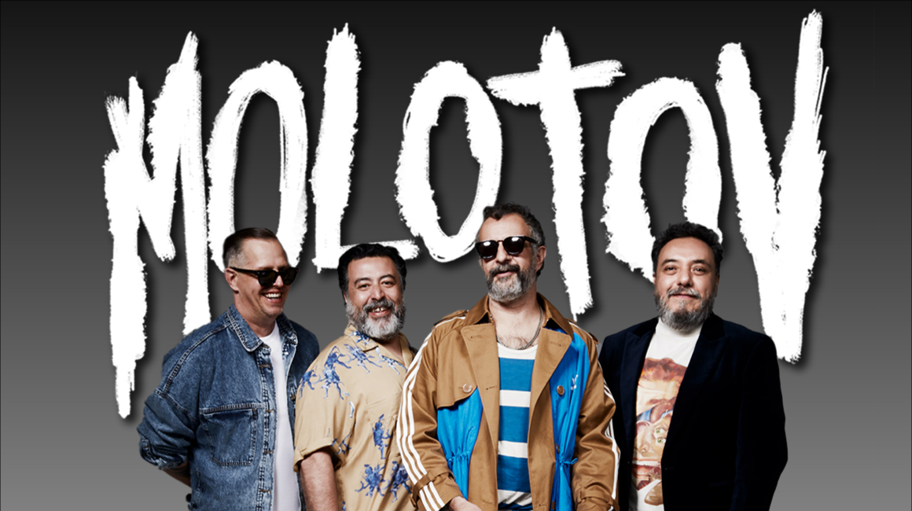
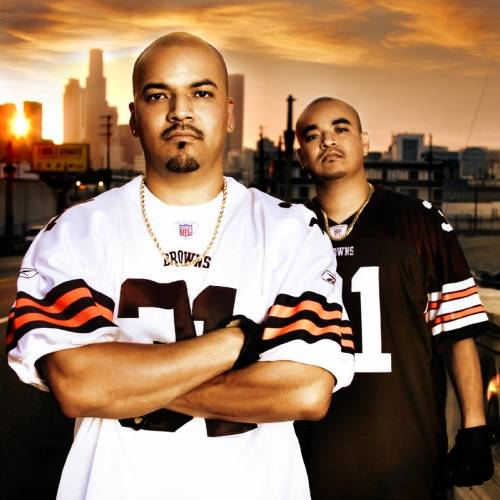
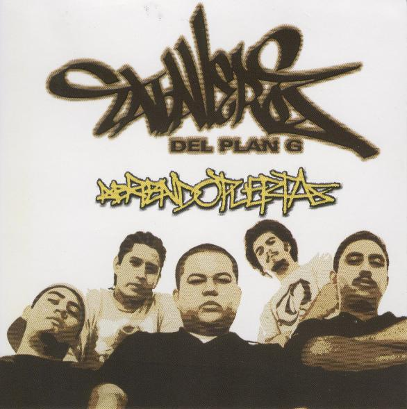
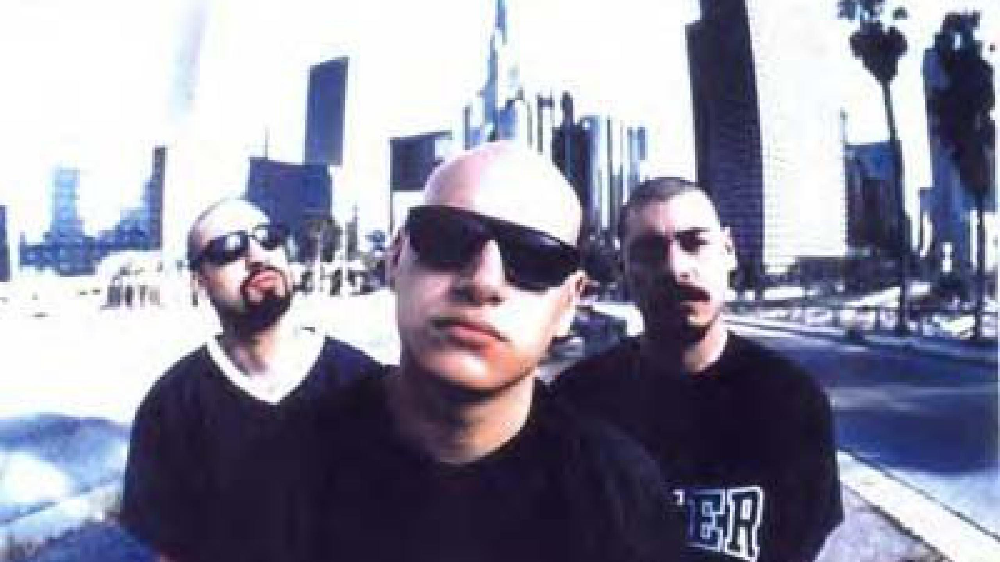

Desde sus primeros años dentro del rap, Gera MX encontró inspiración en diversos grupos y artistas que marcaron la historia del hip-hop mexicano y latino. Estas influencias ayudaron a formar su estilo, su manera de escribir y su visión artística.
Pioneros del hip-hop mexicano y una de las mayores influencias en la carrera de Gera MX.
Su estilo directo y urbano ayudó a definir gran parte de la identidad del rap mexicano.

Con letras críticas y un sonido único, se convirtieron en una referencia importante para muchos artistas.

Fusionaron ritmos urbanos con elementos latinos, abriendo nuevas posibilidades dentro del género.

Grupo fundamental dentro del rap mexicano que dejó huella en generaciones posteriores.

Su estilo underground y sus letras profundas tuvieron gran impacto en la cultura hip-hop.